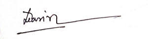
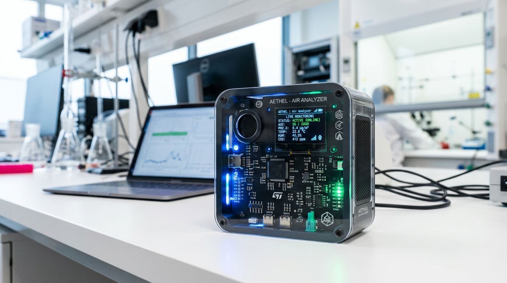
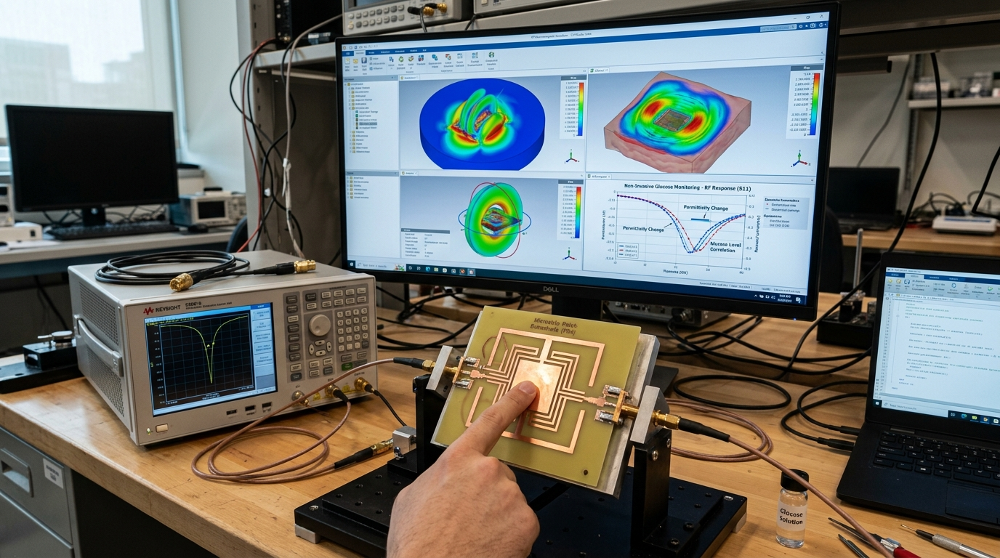
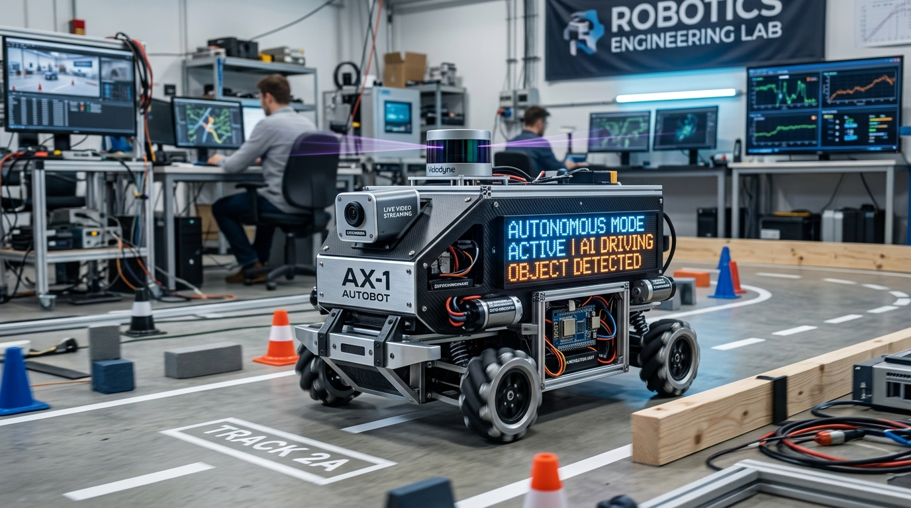

Hi, I'm Md Sazzad Hossen
B.Sc. in Computer Science & Engineering graduate and active IT Officer at Nirjaas Group. Passionate about architecting robust Machine Learning models, non-invasive Biomedical & IoT Sensors, and scalable Full-Stack Web Systems with 6 peer-reviewed research publications.
Dedicated to Solving Real-World Challenges
A disciplined Computer Science & Engineering graduate blending industrial IT operations with scientific innovation.
I hold a Bachelor of Science in Computer Science and Engineering from City University, backed by hands-on industry tenure as an IT Officer at Nirjaas Group. My daily professional scope spans enterprise website engineering, server and hosting infrastructure, database maintenance, network troubleshooting, and machine learning pipeline deployment.
Beyond operational IT, my academic and research journey has yielded 6 peer-reviewed scientific publications. My research interests center on IoT environmental monitoring, deep-learning biometric vision (MTCNN & DenseNet), autonomous robotics, and non-invasive microstrip patch antenna biosensing for blood glucose tracking.

IT Infrastructure & Security
Linux/Windows server configuration, network troubleshooting, database security, and system backups.
AI & Machine Learning
MTCNN, DenseNet, NLP sentiment analysis, predictive modeling, data cleaning, and deployment.
IoT & Embedded Systems
Sensor arrays, ESP32/Arduino microcontroller firmware, wireless data telemetry, and Proteus design.
Full-Stack Web Engineering
Laravel framework, PHP (OOP), JavaScript, dynamic REST APIs, MySQL, and responsive frontend design.
Work Experience & Internships
Information Technology Officer (IT Officer)
Nirjaas Group Dhaka, Bangladesh
Directing IT operations, web presence, database reliability, and machine learning initiatives for the organization.
Machine Learning Intern
CodeAlpha
Completed 4 end-to-end machine learning and deep learning applications covering finance, healthcare, vision, and speech processing using Python:
- Credit Risk Scoring: Predictive financial classification model evaluating borrower reliability and default risk.
- Disease Diagnosis: Deep learning diagnostic system assisting early clinical identification.
- Handwriting Recognition: Convolutional neural network architecture for digit and character transcription.
- Emotion Detection: Speech/visual multi-modal emotional feature extraction and classification.
Data Science Intern
CodeAlpha
Built and evaluated 4 complete ML & exploratory data analysis systems using Python, Pandas, Scikit-learn, and Matplotlib/Seaborn:
- Flower Classification: Multi-class botanical classification with feature optimization.
- Unemployment Analysis: Socio-economic statistical data analysis, temporal trend modeling, and visualization.
- Car Price Prediction: Regression modeling utilizing multi-variable feature engineering.
- Sales Forecasting: Time-series trend estimation for retail revenue projection.
Web Developer Trainee (PHP & Laravel)
BASIS SEIP Tranche 3 Project (BITM) Dhaka, Bangladesh
Intensive professional development track supported by the Asian Development Bank (ADB) and BASIS Institute of Technology & Management:
- Mastered Object-Oriented Programming (OOP) in PHP, MVC architecture, and dynamic database relations.
- Architected scalable web apps using Laravel framework, Blade templates, Eloquent ORM, and RESTful APIs.
- Awarded official certification of excellence upon project defense.
Peer-Reviewed Publications
Author and co-author of 6 research articles published in international journals, focusing on Internet of Things (IoT), Artificial Intelligence, Biometric Security, and Natural Language Processing.
IoT Based Air Quality Monitoring and Notification System
Investigates real-time ambient particulate and gaseous pollutant detection utilizing calibrated IoT sensor arrays and automated threshold alert mechanisms for urban smart city monitoring.
IoT Based Solar Energy Collecting as Alternative Energy Source and Monitoring System
Proposes a smart photovoltaic collection framework tracking solar orientation, real-time voltage/current yield, and automated battery charging state via cloud-connected microcontrollers.
Phishing Website Detection System Using Machine Learning
Employs feature extraction heuristics on URL structures, SSL attributes, and webpage DOM elements combined with supervised classifiers to detect malicious phishing websites accurately.
IoT Based Live Streaming and Object Detecting AI Robotic Car
Presents an embedded robotic vehicle incorporating low-latency Wi-Fi video streaming, computer vision object identification, and real-time obstacle navigation algorithms.
Face Detection with MTCNN Using DenseNet for Enhanced Security
Combines Multi-Task Cascaded Convolutional Networks (MTCNN) for bounding facial alignment with DenseNet deep feature extraction, achieving high-accuracy recognition under complex illuminations.
Sentiment Analysis with Text Mining: A Study from the Newspaper Contents of Bangladesh
Explores Bangla and English national journalism corpora through NLP tokenization, polarity scoring, and sentiment classification to analyze public socio-economic perception.
Featured Projects & Innovations

Published & ThesisIoT Air Quality Monitoring & Alert System
Engineered an IoT-enabled environmental monitoring hub with calibrated gas/particulate sensors, real-time cloud telemetry, and automated SMS/email alert thresholds for unhealthy AQI indices.
MTCNN & DenseNet Biometric Security System
Award-winning deep learning face verification pipeline leveraging MTCNN for fast landmark alignment and DenseNet deep feature representations for high-fidelity facial authentication in security surveillance.

Ongoing InnovationMicrostrip Patch Antenna for Glucose Sensing
Designing and optimizing a medical RF patch antenna leveraging dielectric permittivity shifts in human blood to quantify glucose levels non-invasively without physical blood sampling or painful finger pricks.

Published PaperAutonomous AI Robotic Car with Live Streaming
Equipped an intelligent robotic vehicular chassis with low-latency Wi-Fi video streaming, computer vision object detection, and autonomous navigation for surveillance in remote and hazardous locations.
COVID-19 Information Management System
Developed a full-featured web-based clinical database tracking patient records, ICU bed availability, diagnostic test scheduling, and analytical reporting for healthcare decision makers.
Smart Campus Monitoring System
Designed an IoT network monitoring classroom occupancy, electricity consumption, and ambient room metrics in real time to boost campus sustainability and security. Showcased at City University Project Expo.
Technical Expertise & Toolset
AI & Machine Learning
Model development, training, computer vision, data analysis, and predictive workflows.
Web & Programming
Full-cycle web application development, dynamic architectures, and object-oriented coding.
Database & DevOps
Relational databases, NoSQL schemas, containerization, and version control.
IoT & Hardware Design
Microcontroller firmware, circuit simulation, antenna design, and telemetry arrays.
IT Support & Networking
Enterprise system administration, troubleshooting, network security, and data backups.
Research & Leadership
Scientific manuscript preparation, cross-team coordination, and project execution.
Education, Awards & Certifications
Formal Education
B.Sc. in Computer Science and Engineering
City University, Bangladesh
Data Structures, Algorithms, Discrete Mathematics, DBMS, Operating Systems, Computer Networks, Software Engineering, Artificial Intelligence, Microprocessors & Assembly, Computer Architecture, Advanced Java, Web Database Programming, SQA.
Honours & Certifications
Poster Award: Multidisciplinary Research
CDE Annual Conference 2024 — Science and Development through Multidisciplinary Research
Recognized for the pioneering research paper: "Improved Security Solutions with MTCNN and DenseNet Face Detection".
Introduction to Modern AI Course
Cisco Networking AcademyPHP with Laravel Framework (BASIS SEIP Tranche 3)
Asian Development Bank (ADB) & BITMEnglish Communication Skills
BASIS Institute of Training & Management (BITM)Software Testing & Quality Assurance Career Path
City UniversitySQL Intermediate Certification
SoloLearnLeadership & Scouting
Randon Science Club
Managed club operations, organized technology workshops, and guided student project showcases.
City University Programming Club
Secured 18th position in Inter-Batch Programming Contest (solved 5 algorithmic problems in C/C++).
Bangladesh Sea Scout
7 years of active scouting, leadership camps, and civic disaster relief initiatives.
Letters of Recommendation
"I have known him for several years. He completed his thesis under my supervision and is also actively working on its publication in an international journal. I also instructed him in the Microprocessor and Assembly Language course; that is why I highly recommend him."
"I have known him for several years at Nirjaas Group. He is hardworking, dedicated, and technically skilled across both software engineering and infrastructure management. I highly recommend him for higher studies abroad and am confident in his future academic and professional success."
Let's Collaborate on Research & Tech
Direct Communication
Whether you are looking to collaborate on research, explore machine learning and IoT architectures, or discuss career opportunities, feel free to reach out directly.